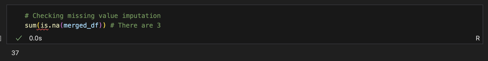
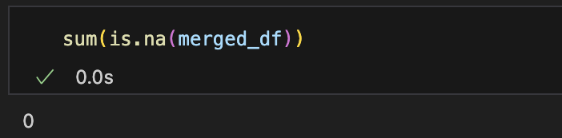
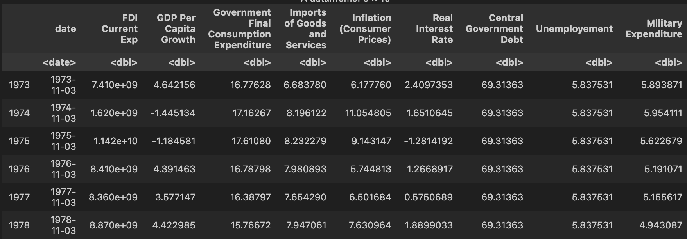
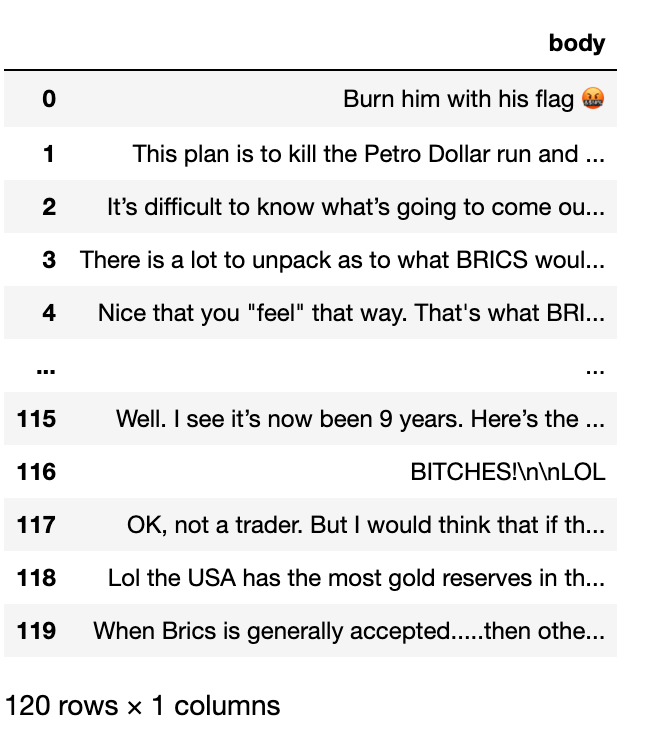
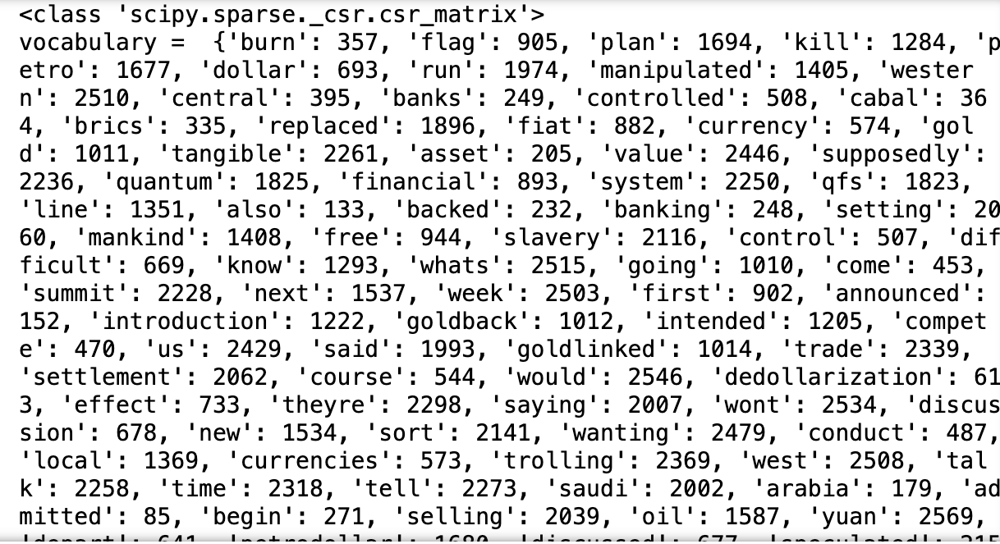
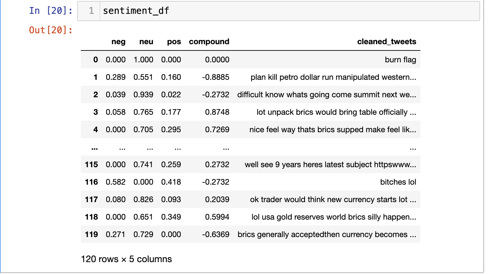

The cleaning of both textual and quantitative as no simple solution as each dataset has to be treated separately. Hence, the data will be tackled separately.
Quantitative Data
For the quantitative data, the way you clean is completely dependent on the nature of the text. Sometimes, cleaning can take a very small period of time and sometimes, it can get a bit too much. As a data scientist, caution has to be taken to ensure each dataset is handled separately. Using the Python and R API, since we have pulled in the US data, this is show it looks.
Python API
For the Python API, where the data had been retrieved from FREDAPI, there was not a lot of cleaning that was required. After merging the data, there was one missing value that was imputed using the Mean Value Imputation. While the MVA is not a recommended method for dealing with missing values, and usually for economic data, missing values are not imputed for the data as it combats the purpose of analysis. If our main gist is to analyse the data and their trends across the nations, the imputing could give us biased estimates. Yet, since the amount of missing values are really less, MVA seems like a better option.
from fredapi import Fredimport pandas as pdfred = Fred(api_key='10fbe66f8f62ad7f44097cca867bf01f')series_id_1 ='GDP'# for GDP USseries_id_2='GDPC1'# for Real Gross GDPseries_id_3='W207RC1Q156SBEA'# Adjusted Saving (% of GNI)series_id_4='USAB6BLTT02STSAQ'# Current account balance (% of GDP)series_id_5='A019RE1Q156NBEA'# Export of Goods and Services as percentage of GDPseries_id_6='MKTGNIUSA646NWDB'# GNI# Set the start and end dates where I need data from 1990 to 2023start_date ='1973'end_date ='2023'# Fetch the datagdp_u = fred.get_series(series_id_1, start_date, end_date)realgdp_u = fred.get_series(series_id_2, start_date, end_date)adjsavings_u = fred.get_series(series_id_3, start_date, end_date)currentaccbalance_u = fred.get_series(series_id_4, start_date, end_date)exportsofgoods_u = fred.get_series(series_id_5, start_date, end_date)gni_u= fred.get_series(series_id_6, start_date, end_date)# for GDPdf1= gdp_u.to_frame(name=('GDP'))annual_gdp_u = df1.resample('A').mean()annual_gdp_u['Year'] = annual_gdp_u.index.yearannual_gdp_u=annual_gdp_u[['Year', 'GDP']]annual_gdp_u.reset_index(drop=True, inplace=True)print(annual_gdp_u.head(5))# Real GDPdf2= realgdp_u.to_frame(name=('Real GDP'))annual_realgdp_u = df2.resample('A').mean()annual_realgdp_u['Year'] = annual_realgdp_u.index.yearannual_realgdp_u.reset_index(drop=True, inplace=True)annual_realgdp_u.head(16)# Adjusted Savingsdf3= adjsavings_u.to_frame(name=('Adjusted Savings'))annual_adjsavings_u = df3.resample('A').mean()annual_adjsavings_u['Year'] = annual_adjsavings_u.index.yearannual_adjsavings_u.reset_index(drop=True, inplace=True)annual_adjsavings_u.head(2)# Current Account Balance % of GDPdf4= currentaccbalance_u.to_frame(name=('Current Account Balance'))annual_currentaccbalance_u = df4.resample('A').mean()annual_currentaccbalance_u['Year'] = annual_currentaccbalance_u.index.yearannual_currentaccbalance_u.reset_index(drop=True, inplace=True)annual_currentaccbalance_u.head(2)# Current Account Balance % of GDPdf5= exportsofgoods_u.to_frame(name=('Exports of Goods and Services'))annual_exportsofgoods_u = df5.resample('A').mean()annual_exportsofgoods_u['Year'] = annual_exportsofgoods_u.index.yearannual_exportsofgoods_u.reset_index(drop=True, inplace=True)annual_exportsofgoods_u.head(2)# GNIdf6= gni_u.to_frame(name=('GNI'))annual_gni_u = df6.resample('A').mean()annual_gni_u['Year'] = annual_gni_u.index.yearannual_gni_u.reset_index(drop=True, inplace=True)annual_gni_u.head(10)merged_df= pd.merge(annual_gdp_u, annual_realgdp_u, how='outer', on='Year' )merged_df= pd.merge(merged_df, annual_adjsavings_u, how='outer', on='Year')merged_df= pd.merge(merged_df, annual_currentaccbalance_u, how='outer', on='Year' )merged_df= pd.merge(merged_df, annual_exportsofgoods_u, how='outer', on='Year' )merged_df= pd.merge(merged_df, annual_gni_u, how='outer', on='Year' )
Year GDP
0 1973 1425.3760
1 1974 1545.2425
2 1975 1684.9050
3 1976 1873.4125
4 1977 2081.8250
Year 0
GDP 0
Real GDP 0
Adjusted Savings 0
Current Account Balance 0
Exports of Goods and Services 0
GNI 0
dtype: int64
merged_df.head(10)
Year
GDP
Real GDP
Adjusted Savings
Current Account Balance
Exports of Goods and Services
GNI
0
1973
1425.37600
6106.37050
10.925
0.492313
0.275
1.431848e+12
1
1974
1545.24250
6073.36275
9.200
0.129574
-0.050
1.553300e+12
2
1975
1684.90500
6060.87525
6.500
1.075657
0.950
1.684554e+12
3
1976
1873.41250
6387.43650
7.450
0.233895
-0.050
1.869603e+12
4
1977
2081.82500
6682.80450
8.125
-0.683540
-1.125
2.082670e+12
5
1978
2351.59875
7052.71125
9.375
-0.661201
-1.125
2.349856e+12
6
1979
2627.32625
7275.99925
9.200
-0.012445
-0.875
2.614202e+12
7
1980
2857.30850
7257.31650
7.050
0.073883
-0.450
2.847055e+12
8
1981
3207.04125
7441.48500
8.000
0.156610
-0.375
3.201886e+12
9
1982
3343.78925
7307.31400
5.625
-0.161860
-0.600
3.371448e+12
R API
For the R API, a similar aspect is seen. When a set of macroeconomic and fiscal variables have been pulled from python, few were also pulled from R using the ‘wbstats’ API.
Similar to the Python API, the data retrieved from here also didn’t have a lot of data cleaning steps.

Here you can see the amount of missing values wherein, we similarly cleaned it through missing value imputation through mean.
# Using mean value imputation
for (x in names(merged_df)) {
mean <- mean(merged_df[[x], na.rm = TRUE) # Calculate column mean ignoring NA
merged_df[[x]][is.na(merged_df[[x]])] <- mean # Replace NA with column mean
}
Here is no missing of the data

The final representation of the data

Textual Data
Python API
For the textual data, the python wrapper of PRAW has been used. This is how the output looks

This was used to clean and vectorise the data.
import string
import re
from nltk.corpus import stopwords
import nltk
from nltk.stem import WordNetLemmatizer
#nltk.download('punkt')
#nltk.download('stopwords')
def clean_string(text):
# lowercase the text
text = text.lower()
# replace with regular quotations, added this since there were few texts that weren't cleaned
text = text.replace('’', "'")
# remove emojis, saw a list of them online so just added them.
emoji_pattern = re.compile("["
u"\U0001F600-\U0001F64F" # emoticons
u"\U0001F300-\U0001F5FF" # symbols & pictographs
u"\U0001F680-\U0001F6FF" # transport & map symbols
u"\U0001F700-\U0001F77F" # alchemical symbols
u"\U0001F780-\U0001F7FF" # Geometric Shapes Extended
u"\U0001F800-\U0001F8FF" # Supplemental Arrows-C
u"\U0001F900-\U0001F9FF" # Supplemental Symbols and Pictographs
u"\U0001FA00-\U0001FA6F" # Chess Symbols
u"\U0001FA70-\U0001FAFF" # Symbols and Pictographs Extended-A
u"\U0001F004-\U0001F0CF" # Miscellaneous Symbols and Pictographs
u"\U0001F0D0-\U0001F0FF" # Emoticons
u"\U0001F1E0-\U0001F1FF" # Regional Indicator Symbols
u"\U0001F200-\U0001F251" # Enclosed Ideographic Supplement
"]+", flags=re.UNICODE)
text = emoji_pattern.sub(r'', text) # Remove emojis
# line breaks removal
text = text.replace('\n', ' ')
# punctuation removal
text = ''.join([char for char in text if char not in string.punctuation])
# tokenize the text
words = nltk.word_tokenize(text)
# remove stopwords
words = [word for word in words if word not in stopwords.words('english')]
# rejoin the words into a cleaned string
cleaned_text = ' '.join(words)
return cleaned_text
We then vectorise the data using the ‘CountVectoriser’ from sklearn
from sklearn.feature_extraction.text import CountVectorizer
vectorizer = CountVectorizer()
value = [str(element) for element in df2]
vectorizer=CountVectorizer()
Xs = vectorizer.fit_transform(value)
print(type(Xs))
print("vocabulary = ",vectorizer.vocabulary_)
print("stop words =", vectorizer.stop_words)
col_names=vectorizer.get_feature_names_out()
print("col_names=",col_names)
This is how the actual output looks like

In addition to that, since we are also looking for perform Naive Bayes next, which is often used for categorical data, we use the SIA, or the Sentiment Intensity Analyser from the NLTK that automatically calculates the polarity scores on basis of the tweets. This is required as the data I retrieved didn’t have any labels to it. This seemed like the best option.
sia = SIA()
results = []
for tweet in df['cleaned_tweets']:
polarity = sia.polarity_scores(tweet)
polarity['cleaned_tweets'] = tweet cores
results.append(polarity)
sentiment_df = pd.DataFrame(results)
pprint(sentiment_df.head())

Record Data
For the record data, using the world bank data bank, the data was retrieved. There is a lot of cleaning that was supposed to be done. The entire data as seen under data_gathering section was transposed and had 152 columns. I had to individually transpose. Below, a similar method was imposed to clean all the 5 individual datasets.
import pandas as pdimport matplotlib.pyplot as pltimport numpy as np#pip install xlrddf=pd.read_excel('../data/excel_files/india.xlsx')df.head(10)
Series Name
Series Code
Country Name
Country Code
1979 [YR1979]
1980 [YR1980]
1981 [YR1981]
1982 [YR1982]
1983 [YR1983]
1984 [YR1984]
...
2013 [YR2013]
2014 [YR2014]
2015 [YR2015]
2016 [YR2016]
2017 [YR2017]
2018 [YR2018]
2019 [YR2019]
2020 [YR2020]
2021 [YR2021]
2022 [YR2022]
0
Adjusted net national income (annual % growth)
NY.ADJ.NNTY.KD.ZG
India
IND
-4.294464e+00
1.197854e+01
-2.572689e+00
1.626264e+00
1.156210e+01
1.851968e+00
...
5.743356e+00
7.013968e+00
8.865576e+00
7.532403e+00
8.398101e+00
5.840102e+00
4.233916
-6.952693
..
..
1
Adjusted net national income (constant 2015 US$)
NY.ADJ.NNTY.KD
India
IND
2.211879e+11
2.476830e+11
2.413109e+11
2.452352e+11
2.735896e+11
2.786564e+11
...
1.579994e+12
1.690815e+12
1.840715e+12
1.979365e+12
2.145594e+12
2.270899e+12
2367046992096.234863
2202473491333.981445
..
..
2
Adjusted savings: consumption of fixed capital...
NY.ADJ.DKAP.GN.ZS
India
IND
8.340217e+00
8.055168e+00
8.393346e+00
8.819348e+00
8.419293e+00
8.784357e+00
...
1.082108e+01
1.087247e+01
1.062772e+01
1.053878e+01
1.054180e+01
1.071598e+01
10.84664
11.088283
..
..
3
Adjusted savings: education expenditure (% of ...
NY.ADJ.AEDU.GN.ZS
India
IND
2.600000e+00
2.600000e+00
2.600000e+00
3.051058e+00
3.153437e+00
2.700000e+00
...
3.080000e+00
3.080000e+00
3.080000e+00
3.080000e+00
3.080000e+00
3.080000e+00
3.08
3.08
..
..
4
Adjusted savings: net national savings (% of GNI)
NY.ADJ.NNAT.GN.ZS
India
IND
7.427910e+00
6.418183e+00
7.373027e+00
7.043158e+00
7.024774e+00
7.097912e+00
...
2.398766e+01
2.288990e+01
2.220882e+01
2.088344e+01
2.155743e+01
2.096942e+01
19.364627
19.896565
..
..
5
Current account balance (% of GDP)
BN.CAB.XOKA.GD.ZS
India
IND
3.290178e-02
-9.580692e-01
-1.394549e+00
-1.257273e+00
-8.874382e-01
-1.089317e+00
...
-2.645667e+00
-1.339509e+00
-1.067549e+00
-5.278806e-01
-1.439488e+00
-2.426975e+00
-1.049612
1.225112
-1.060924
-2.335269
6
Exports of goods and services (% of GDP)
NE.EXP.GNFS.ZS
India
IND
6.749638e+00
6.139551e+00
5.936027e+00
5.983300e+00
5.837629e+00
6.283401e+00
...
2.543086e+01
2.296796e+01
1.981319e+01
1.915823e+01
1.879176e+01
1.992783e+01
18.664265
18.705247
21.514389
22.449438
7
Exports of goods and services (annual % growth)
NE.EXP.GNFS.KD.ZG
India
IND
1.115419e+01
5.237330e+00
-8.169341e-01
6.020508e+00
-9.149183e-01
7.297852e+00
...
7.792389e+00
1.777591e+00
-5.647087e+00
4.984258e+00
4.564708e+00
1.193187e+01
-3.384978
-9.135286
29.293893
11.502775
8
External debt stocks (% of GNI)
DT.DOD.DECT.GN.ZS
India
IND
1.187508e+01
1.109611e+01
1.161548e+01
1.346761e+01
1.410165e+01
1.553087e+01
...
2.330087e+01
2.270491e+01
2.302951e+01
2.026309e+01
1.950102e+01
1.948509e+01
20.000281
21.470538
19.618194
..
9
Final consumption expenditure (% of GDP)
NE.CON.TOTL.ZS
India
IND
8.569155e+01
8.749802e+01
8.576861e+01
8.531944e+01
8.563585e+01
8.496053e+01
...
6.794093e+01
6.856857e+01
6.943557e+01
6.960383e+01
6.949235e+01
7.011154e+01
71.913963
72.88427
72.300662
71.036559
10 rows × 48 columns
I had to transpose the data.
df = df.Tdf.columns = df.iloc[0]
The tranposed data is shown below.
df.head()
Series Name
Adjusted net national income (annual % growth)
Adjusted net national income (constant 2015 US$)
Adjusted savings: consumption of fixed capital (% of GNI)
Adjusted savings: education expenditure (% of GNI)
Adjusted savings: net national savings (% of GNI)
Current account balance (% of GDP)
Exports of goods and services (% of GDP)
Exports of goods and services (annual % growth)
External debt stocks (% of GNI)
Final consumption expenditure (% of GDP)
...
Short-term debt (% of total reserves)
Trade (% of GDP)
Consumer price index (2010 = 100)
Inflation, consumer prices (annual %)
Real interest rate (%)
Lending interest rate (%)
Life expectancy at birth, total (years)
Expense (% of GDP)
Interest payments (% of revenue)
Military expenditure (% of GDP)
Series Name
Adjusted net national income (annual % growth)
Adjusted net national income (constant 2015 US$)
Adjusted savings: consumption of fixed capital...
Adjusted savings: education expenditure (% of ...
Adjusted savings: net national savings (% of GNI)
Current account balance (% of GDP)
Exports of goods and services (% of GDP)
Exports of goods and services (annual % growth)
External debt stocks (% of GNI)
Final consumption expenditure (% of GDP)
...
Short-term debt (% of total reserves)
Trade (% of GDP)
Consumer price index (2010 = 100)
Inflation, consumer prices (annual %)
Real interest rate (%)
Lending interest rate (%)
Life expectancy at birth, total (years)
Expense (% of GDP)
Interest payments (% of revenue)
Military expenditure (% of GDP)
Series Code
NY.ADJ.NNTY.KD.ZG
NY.ADJ.NNTY.KD
NY.ADJ.DKAP.GN.ZS
NY.ADJ.AEDU.GN.ZS
NY.ADJ.NNAT.GN.ZS
BN.CAB.XOKA.GD.ZS
NE.EXP.GNFS.ZS
NE.EXP.GNFS.KD.ZG
DT.DOD.DECT.GN.ZS
NE.CON.TOTL.ZS
...
DT.DOD.DSTC.IR.ZS
NE.TRD.GNFS.ZS
FP.CPI.TOTL
FP.CPI.TOTL.ZG
FR.INR.RINR
FR.INR.LEND
SP.DYN.LE00.IN
GC.XPN.TOTL.GD.ZS
GC.XPN.INTP.RV.ZS
MS.MIL.XPND.GD.ZS
Country Name
India
India
India
India
India
India
India
India
India
India
...
India
India
India
India
India
India
India
India
India
India
Country Code
IND
IND
IND
IND
IND
IND
IND
IND
IND
IND
...
IND
IND
IND
IND
IND
IND
IND
IND
IND
IND
1979 [YR1979]
-4.294464
221187904202.083466
8.340217
2.6
7.42791
0.032902
6.749638
11.154191
11.875085
85.691548
...
5.907537
14.918805
8.745175
6.275683
-1.061146
14.5
53.06
12.314448
12.925728
3.261329
5 rows × 33 columns
df = df.iloc[4:]df.head()
Series Name
Adjusted net national income (annual % growth)
Adjusted net national income (constant 2015 US$)
Adjusted savings: consumption of fixed capital (% of GNI)
Adjusted savings: education expenditure (% of GNI)
Adjusted savings: net national savings (% of GNI)
Current account balance (% of GDP)
Exports of goods and services (% of GDP)
Exports of goods and services (annual % growth)
External debt stocks (% of GNI)
Final consumption expenditure (% of GDP)
...
Short-term debt (% of total reserves)
Trade (% of GDP)
Consumer price index (2010 = 100)
Inflation, consumer prices (annual %)
Real interest rate (%)
Lending interest rate (%)
Life expectancy at birth, total (years)
Expense (% of GDP)
Interest payments (% of revenue)
Military expenditure (% of GDP)
1979 [YR1979]
-4.294464
221187904202.083466
8.340217
2.6
7.42791
0.032902
6.749638
11.154191
11.875085
85.691548
...
5.907537
14.918805
8.745175
6.275683
-1.061146
14.5
53.06
12.314448
12.925728
3.261329
1980 [YR1980]
11.978544
247682993937.674408
8.055168
2.6
6.418183
-0.958069
6.139551
5.23733
11.096107
87.498021
...
10.583034
15.384577
9.737409
11.346073
4.476508
16.5
53.611
11.702478
13.780033
3.133781
1981 [YR1981]
-2.572689
241310879910.579712
8.393346
2.6
7.373027
-1.394549
5.936027
-0.816934
11.615484
85.768606
...
19.694561
14.507265
11.014232
13.112547
5.118237
16.5
54.175
11.376034
14.073244
3.186248
1982 [YR1982]
1.626264
245235232731.58252
8.819348
3.051058
7.043158
-1.257273
5.9833
6.020508
13.467614
85.319441
...
29.084294
14.125928
11.883336
7.890743
7.774707
16.5
54.732
11.959873
15.563031
3.345118
1983 [YR1983]
11.562099
273589572947.595245
8.419293
3.153437
7.024774
-0.887438
5.837629
-0.914918
14.101651
85.635851
...
40.629366
13.690594
13.29366
11.868081
7.320987
16.5
55.281
12.077793
17.460567
3.323069
5 rows × 33 columns
df = df.iloc[1:]df.head()
Series Name
Adjusted net national income (annual % growth)
Adjusted net national income (constant 2015 US$)
Adjusted savings: consumption of fixed capital (% of GNI)
Adjusted savings: education expenditure (% of GNI)
Adjusted savings: net national savings (% of GNI)
Current account balance (% of GDP)
Exports of goods and services (% of GDP)
Exports of goods and services (annual % growth)
External debt stocks (% of GNI)
Final consumption expenditure (% of GDP)
...
Short-term debt (% of total reserves)
Trade (% of GDP)
Consumer price index (2010 = 100)
Inflation, consumer prices (annual %)
Real interest rate (%)
Lending interest rate (%)
Life expectancy at birth, total (years)
Expense (% of GDP)
Interest payments (% of revenue)
Military expenditure (% of GDP)
1980 [YR1980]
11.978544
247682993937.674408
8.055168
2.6
6.418183
-0.958069
6.139551
5.23733
11.096107
87.498021
...
10.583034
15.384577
9.737409
11.346073
4.476508
16.5
53.611
11.702478
13.780033
3.133781
1981 [YR1981]
-2.572689
241310879910.579712
8.393346
2.6
7.373027
-1.394549
5.936027
-0.816934
11.615484
85.768606
...
19.694561
14.507265
11.014232
13.112547
5.118237
16.5
54.175
11.376034
14.073244
3.186248
1982 [YR1982]
1.626264
245235232731.58252
8.819348
3.051058
7.043158
-1.257273
5.9833
6.020508
13.467614
85.319441
...
29.084294
14.125928
11.883336
7.890743
7.774707
16.5
54.732
11.959873
15.563031
3.345118
1983 [YR1983]
11.562099
273589572947.595245
8.419293
3.153437
7.024774
-0.887438
5.837629
-0.914918
14.101651
85.635851
...
40.629366
13.690594
13.29366
11.868081
7.320987
16.5
55.281
12.077793
17.460567
3.323069
1984 [YR1984]
1.851968
278656365651.448975
8.784357
2.7
7.097912
-1.089317
6.283401
7.297852
15.530868
84.960526
...
43.018087
14.009376
14.399548
8.318907
7.9471
16.5
55.816
13.14296
19.011381
3.416876
5 rows × 33 columns
print(df.isnull().sum())
Series Name
Adjusted net national income (annual % growth) 0
Adjusted net national income (constant 2015 US$) 0
Adjusted savings: consumption of fixed capital (% of GNI) 0
Adjusted savings: education expenditure (% of GNI) 0
Adjusted savings: net national savings (% of GNI) 0
Current account balance (% of GDP) 0
Exports of goods and services (% of GDP) 0
Exports of goods and services (annual % growth) 0
External debt stocks (% of GNI) 0
Final consumption expenditure (% of GDP) 0
Final consumption expenditure (annual % growth) 0
Foreign direct investment, net inflows (% of GDP) 0
Foreign direct investment, net outflows (% of GDP) 0
GDP growth (annual %) 0
GDP per capita growth (annual %) 0
General government final consumption expenditure (% of GDP) 0
GNI growth (annual %) 0
Goods exports (BoP, current US$) 0
Goods imports (BoP, current US$) 0
Imports of goods and services (% of GDP) 0
Imports of goods and services (annual % growth) 0
Services, value added (% of GDP) 0
Services, value added (annual % growth) 0
Short-term debt (% of total reserves) 0
Trade (% of GDP) 0
Consumer price index (2010 = 100) 0
Inflation, consumer prices (annual %) 0
Real interest rate (%) 0
Lending interest rate (%) 0
Life expectancy at birth, total (years) 0
Expense (% of GDP) 0
Interest payments (% of revenue) 0
Military expenditure (% of GDP) 0
dtype: int64
In the dataset, there was a problem of the dataframe having row indexes and column indexes and hence, I worked on it drop the index and create a yearly column from scratch.
# creating a new index rather than treating itnew_index =range(1979, 2022)# Reset the index with the new rangedf = df.reset_index(drop=True)df.index = new_indexdf.index.name ="year"df.shape
Next for the purpose of Naive Bayes, binning has to be done for which I looked at the maximum and minimum values of the gdp growth and binned them accordingly.